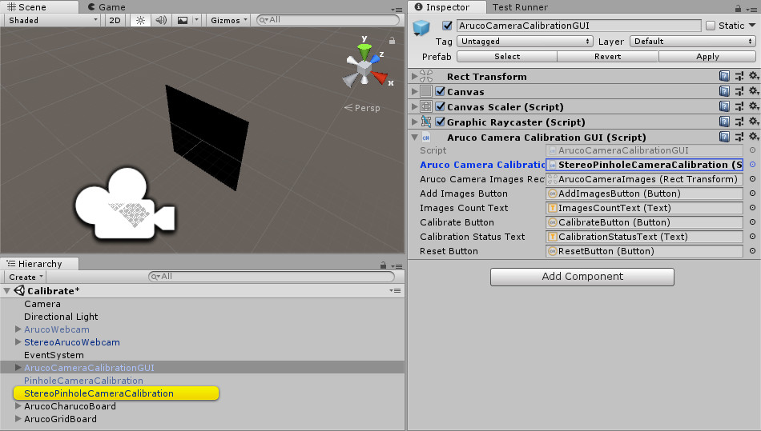
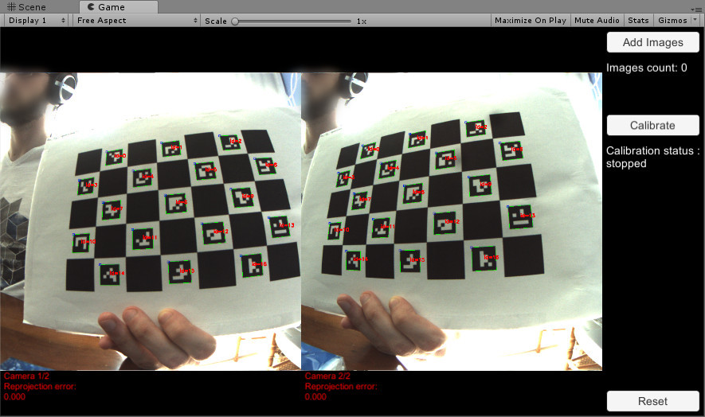

Calibrate a Camera
Motivation
In order to be able to track markers you need to calibrate your camera, i.e. measure the camera parameters.
The calibration process may seems long but it's only because there is lots of customization options. The principle is straightforward: (1) print a calibration board and (2) take images with your camera of the board in different positions and orientations. ArucoUnity will generate XML file containing the camera parameters.
To understand the algorithms used, read these tutorials: Calibration with ArUco and ChArUco and Camera calibration With OpenCV.
Calibrate a camera
Most of the cameras we use today on our smartphones or laptops are called in ArucoUnity pinhole cameras (camera using a rectilinear lens) in contrast with cameras using a fisheye lens. So if you want to calibrate your webcam or smartphone, read this section.
- Make a calibration board.
- Create a charuco board or a grid board. See the Create Markers page for details.
- Print the generated image on paper. Stick it on a hard cardboard: the paper must remains as flat as possible during the calibration (Fig.1).
 Fig.1: Different viewpoints of a charuco calibration board. From OpenCV: https://docs.opencv.org/3.4/da/d13/tutorial_aruco_calibration.html
Fig.1: Different viewpoints of a charuco calibration board. From OpenCV: https://docs.opencv.org/3.4/da/d13/tutorial_aruco_calibration.html
- Open the
Assets/ArucoUnity/Scenes/CalibrateCamera.unityscene. - Configure the
ArucoWebcamgame object (Fig.2).- Set the
WebcamIdto select the camera you want to use. The first camera's id is0. You can list the available webcams with WebCamTexture.devices. MonoArucoCameraDisplay.AutoStartis uncheck because the video stream is displayed by theArucoCameraCalibrationGUIobject.
- Set the

Fig.2: Default configuration of ArucoWebcam using the first webcam (id=0).
- Configure the calibration board on the
PinholeCameraCalibrationgame object (Fig.3).- Set the
CalibrationBoardwith a charuco board or a grid board. Both are already created in the scene to help you. - Configure the calibration board object by measuring the one you just printed : units are in meters this time. The
ArucoObjectDisplayerhelps you visualize the configured board to see if it's match with the printed one. Don't switch x and y values.
- Set the
- Optionally adjust parameters on the
PinholeCameraCalibrationgame object.- Set the output camera parameters file with
CameraParametersController. The folder is relative to persistentDataPath in builds or to the "Asset" folder of your projet in the editor. If the filename is empty, it will be automatically generated from the Aruco camera used. - Configure the board detection with
DetectorParametersControllerparameters. They are described on the Detector Parameters section of the ArUco camera calibration tutorial. - Configure the calibration flags with
PinholeCameraCalibrationFlags. They are described on the calib3d::calibrateCamera() function documentation.
- Set the output camera parameters file with

Fig.3: PinholeCameraCalibration configured with a charuco board.
- Run the scene and interact with the UI to calibrate your camera (Fig.4).
- Hold the calibration board in front of your camera and click on the
Add Imagebutton. Think to deactivate the autofocus of your camera: a calibration is done for only one focal length at the time. - Take at least 10 images of you calibration board in different positions and orientations without moving the camera between each snapshot. See this example of images.
- Reset the image list if you want to start over with the
Resetbutton. - Calibrate your camera with the image list with the
Calibratebutton. The reprojection error is displayed to score the calibration precision: it should be close to 0 px. Read the responses of this stackoverflow question to improve your calibrations.
- Hold the calibration board in front of your camera and click on the
{kind=link}

Fig.4: Calibration scene running.
Calibrate a stereoscopic camera
The process is the same as in the Calibrate a camera section but we use differents camera and calibration scripts.
- Make a calibration board.
- Open the
Assets/ArucoUnity/Scenes/CalibrateCamera.unityscene. - Configure the camera:
- Deactivate the
ArucoWebcamgame object. - Drag
Assets/ArucoUnity/Prefabs/Cameras/StereoArucoWebcam.prefabinto the scene. - Set
StereoArucoWebcam.WebcamId1,StereoArucoWebcam.WebcamId2and uncheckStereoArucoCameraDisplay.AutoStart(Fig.5).
- Deactivate the

Fig.5: Stereo webcam configured to use the first (id1=0) and the second webcam (id2=1)
- Configure the calibration:
- Deactivate the
PinholeCameraCalibrationgame object. - Drag
Assets/ArucoUnity/Prefabs/Calibration/StereoPinholeCameraCalibration.prefabinto the scene. - Set
StereoPinholeCameraCalibration.ArucoCamerawithStereoArucoWebcam(Fig.6). - Set
ArucoCameraCalibrationGUI.ArucoCameraCalibrationwithStereoPinholeCameraCalibration(Fig.7). - Optionally adjust detection and calibration parameters.
- Deactivate the

Fig.6: StereoPinholeCameraCalibration configured with a charuco board.

Fig.7: ArucoCameraCalibrationGUI configured with StereoPinholeCameraCalibration.
- Run the scene and calibration your camera (Fig.8).

Fig.8: Calibration scene running.
Calibrate a fisheye camera
Follow the Calibrate a stereoscopic camera section but use OmnidirCameraCalibration prefab for a monoscopic camera or StereoOmnidirCameraCalibration prefab for a stereoscopic camera (Fig.9).

Fig.9: Calibration scene running for a stereoscopic fisheye camera.
The algorithms used are described in this tutorial: Omnidirectional Cameara [sic] Calibration.
Reuse calibration data
You may already have calibrated your camera and want to directly reuse your calibration data. ArucoUnity doesn't use the YAML format used by OpenCV to store these data but use XML files. Therefore you need to create by hand calibration file for ArucoUnity.
Make a copy of Assets/ArucoUnity/CameraParameters/<CameraType>Example.xml and transfer your calibration data.